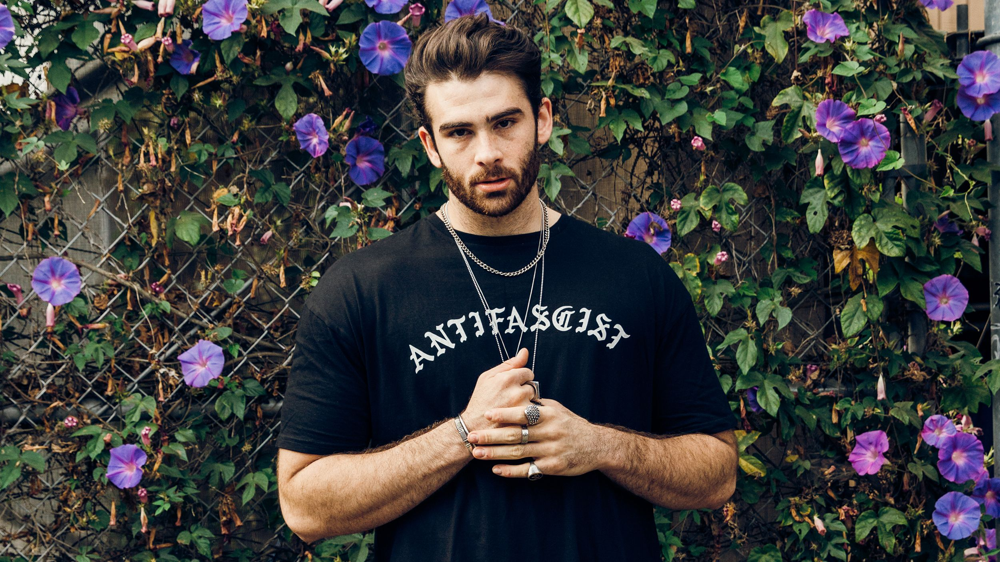

Hasan Piker
Hasan was born in Turkey on July 25th 1991, his full name is Hasan Doğan Piker, the Turkish version is “Haˈsan Doˈan Piˈcæɾ”. While online he is known as HasanAbi, Abi means big brother in Turkish.
Hasan was raised Muslim and is of Turkish descent.
He now lives in LA California, he streams on twitch as a left-wing political commentator. Before streaming he worked as a broadcast journalist and producer at The Young Turks.

What he does
He started as a leftist streamer because he thought there was too much right-wing representation in the twitch community and he wanted to voice his opinions somewhere other than Facebook.
His career really took off when he got invited to talk on Fox News’s The issue Is and the political podcast called “Chapo Trap House”.
Hasan also covers other topics that some may not count as “political”, he usually covers issues going on in the world that most may not see. He
He averages 60k viewers per stream but while covering the results of the 2020 presidential election he peaked at 230k. Typically he streams for 3-9 hours every day.
Hasan has been identified as a progressive leftist and socialist. He has advocated in favor of the black lives matter movement, gay and transgender rights, medicare for all and workplace democracy.
He has also advocated against war and Islamophobia.
Our opinions
We think he is a good active citizen because of the proper way he portrays himself and how he informs people on the lesser known things in the world.
“He has helped me figure out where i politically stand” -Lisette
“I am more informed on politics now” -Xander